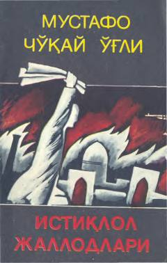

IJMustafo Cho'qay o'g'lining 1917 yil Turkistondagi murakkab siyosiy voqealar va kurashlarga bag'ishlangan xotiralari.
Ushbu kitob atoqli jamoat arbobi va mutafakkir Mustafo Cho'qay o'g'lining 1917 yil voqealari va Turkistondagi qatag'onlar haqidagi xotiralarini o'z ichiga oladi. Asarda o'sha davrdagi siyosiy kurashlar, milliy ozodlik harakatlari va bolsheviklar tuzumining fojiali oqibatlari bayon etilgan. Kitob tariximizning qorong'u sahifalarini ochib berishda muhim manba bo'lib xizmat qiladi.